UDN
Search public documentation:
TerrainAdvancedTexturesCH
English Translation
日本語訳
한국어
Interested in the Unreal Engine?
Visit the Unreal Technology site.
Looking for jobs and company info?
Check out the Epic games site.
Questions about support via UDN?
Contact the UDN Staff
日本語訳
한국어
Interested in the Unreal Engine?
Visit the Unreal Technology site.
Looking for jobs and company info?
Check out the Epic games site.
Questions about support via UDN?
Contact the UDN Staff
地形高级贴图
概述
- 使用类似于Adobe PhotoShop的软件来创建并编辑数字图像。
- 创建并编辑图像颜色通道(RGB)及alpha通道。
- 什么是彩色图像和灰度化图像，以及它们的不同和用途。
- 导入贴图 和 设置 贴图属性。
- 材质基础
- 创建并使用材质以及材质编辑器。
- 地形设计 – TerrainMaterials(地形材质) 和TerrainLayerSetups(地形层设置)。
- 使用地形 和 设立地形
- 使用 地形编辑 对话框
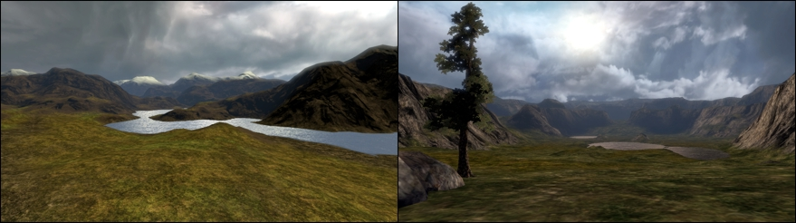
地图贴图注意事项
贴图缩放
在大多数情况下，应用到地形上的UV缩放都需要进行调整，以便贴图风格在近景视图中看上去是相对正确的。通常草叶或小石头也行该被缩放为它们在现实世界中的尺寸。这带来的一个问题是当您从远距离看这些东西时，贴图块变得更加的明显，并且特定尺寸的贴图只能包含特定数量的细节和种类，通常贴图分辨率越小，平铺块看上去越明显同时细节越低。 如果贴图UV缩放比例的值设置的很小，贴图平铺块通常是非常明显的。 如果贴图UV缩放比例的值设置的很大，贴图平铺块通常不会那么明显并且它们在远处的细节具有很多变化，但是在相机镜头附近的地形通常看上去是模糊的，并且贴图中的物体的细节缩放比例比如草或岩石看上去比真实世界中的要大。贴图平铺
由于创建用于地形的贴图的分辨率通常是512x512、1024x1024 或2048x2048，所以要获得覆盖到表面包含多种细节种类并且贴图块在视觉上没有失真的贴图是很难得。在大多数情况下，贴图上视觉上的不同，比如贴图的色调和亮度的改变、或者特定细节比如在贴图中心的大的岩石块，当沿着相机视图从远处看时，都会导致贴图平铺块变得更加的明显。Fillrate(填充率)
因为地形通常用于创建较大的室外场景，通常它将会覆盖大部分的屏幕区域，一般为50%到75%。随着地形材质复杂性的增加，它需要更大的处理能力来创建渲染到屏幕上贴图像素的贴图。具有较低GPUs和较低填充率的视频适配器将会导致较慢的渲染时间和较低的性能。虚幻引擎
虚幻引擎中的地形系统对于可以应用的材质的数量和可以执行的着色器指令的数量有特定的限制。精确的数值随着层设计和特定食品适配器硬件的限制而不同。Shader Model 2 and 3视频适配器支持16个 Texture Samplers(贴图采样器)。用于每个地形材质中的每个特定贴图将需要这些采样器其中的一个。注意，在大多数情况下，Shader Model 2视频适配器可以渲染的地形材质层设置不如Shader Model 3复杂。在本指南的后面，将会对 Texture Samplers(贴图采样器)进行详细的介绍。 由于硬件和渲染的这些限制，在设计整个地形材质设置时使用较少的独立贴图、材质以及尽可能低的指令数量来获得期望的贴图效果是明智的。设计实例化材质

材质表达式构建块
漫反射贴图亮度和色彩
要想降低地形上的贴图的采样数以及游戏的总贴图数量，一个简单的做法便是创建一个亮度和色彩修改器。不再需要创建具有不同亮度或色彩的一个贴图多个版本，比如创建一个浅棕色和茶褐色的沙漠，只要使用Multiply Expression(乘法表达式)来修改RGB通道中的VectorParameter(向量表达式)参数的值便可以修改材质中的贴图。 改变VectorParameter(向量参数)的RGB属性来修改贴图的亮度和色彩。值为1.0为默认值。VectorParameter表达式中的 (向量参数)的A (alpha)属性值可以保留为默认值1.0。
漫反射贴图
当使用灰度化细节贴图来补偿具有较大缩放比例的漫反射贴图的近景视图质量时，通常需要调整细节贴图的亮度级别以便它不会改变漫反射贴图的总体亮度。通过设置细节贴图属性的UnpackMax可以完成这个工作，但是那样亮度将会被固定为那个值。通过使用Multiply Expression(乘法表达式)，可以通过修改ScalerParameter(标量)参数表达式的值来修改RGBA通道，我们可以根据需要修改细节贴图的每个实例的亮度。 改变ScalerParameter(标量参数)属性来修改贴图的亮度。值1.0为默认值。
法线贴图细节材质混合及强度
NormalMaps(法线贴图)通常可以在很大程度上提高地形上使用的较大的岩石贴图的真实性，比如峭壁悬崖的面和秃山。由于贴图尺寸以及普通贴图分辨率为1024x1024 或 2048x2048的限制，所以漫反射岩石贴图通常会在TerrainMaterial(地形材质)中被缩放为一个较大的尺寸来模仿现实世界中的视觉效果。如果玩家可以接近这些岩石贴图，那么较大的贴图缩放比例通常会导致在岩石上出现一种模糊的大像素画外观。除了在漫反射岩石贴图上使用细节贴图外，也可以在NormalMap(法线贴图)上使用细节贴图。 当混合两个NormalMap(法线贴图)时，必须移除其中一个材质的Blue(蓝色)通道，或者它从本质上忽略凸凹情况的渲染。在把细节法线贴图和主要法线贴图混合到一起之前，可以使用VectorParameter(向量参数) 和 Multiply(乘法表达式)来去除细节法线贴图中的Blue(蓝色)通道。VectorParameter(向量参数)表达式的R和G通道也可以调整为1.0以上的值来增加细节贴图的凸凹强度。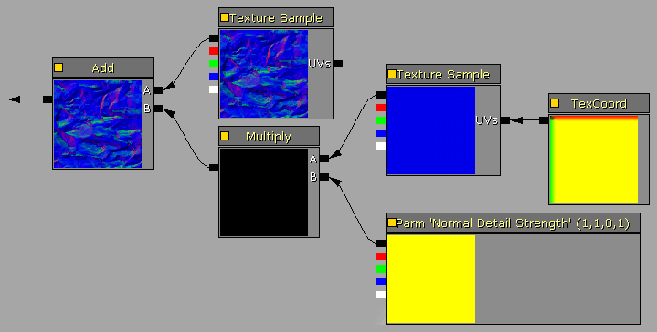
蒙板混合关卡
以下出现的某些自定义材质使用灰度化蒙板来执行一些函数，比如贴图混合。通过使用ScalerParameter(标量参数)表达式来控制Multiply Expression(乘法表达式)，从而可以在直接在材质中修改混合权重Mask(蒙板)来进行简化值的调整并允许进行实例化。把Clamp Expression(区间限定表达式)和Constant(常量)1连接到它的Max节点上，来确保Max的范围总是在0.0到1.0之间。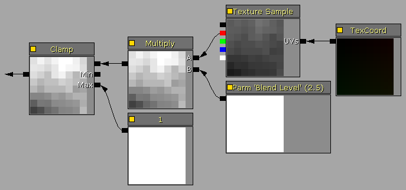
Desaturation Expression(冲淡颜色表达式)
Desaturation Expression(冲淡颜色表达式)用于修改现有贴图，降低颜色饱和度。这可以用于修改地形贴图，使它在地形地理系统中提供更加自然的阴影混合，比如自然的岩石颜色或枯草的颜色。它也可以通过重新使用Materials(材质)中修改的类似贴图，改变它们的颜色、饱和度、亮度等等，从而降低发行游戏或地图中所需要的总的贴图数量。
复杂材质设计的注意事项
命名规则
要想改善包的组织结构并更加便利地重新使用引擎的对象，对于所有创建的资源都应该使用这个简单但严格的命名规则。推荐的命名惯例系统如下所示：| TX_TextureName_D | 漫反射贴图 |
| TX_TextureName_DO | 在alpha通道具有不透明性的漫反射贴图 |
| TX_TextureName_DS | 在alpha通道具有高光的漫反射贴图。 |
| TX_TextureName_N | 法线贴图 |
| TX_TextureName_O | 不透明贴图 |
| TX_TextureName_S | 高光贴图 |
| MAT_MaterialName | 材质 |
| TM_MaterialName | 地形材质 |
| TLS_SetupName | 地形层设置 |
| TX_Detail[name] | 具有8-位灰度化或打包的位面板的细节贴图。 | eg. TX_DetailRock1 |
| TX_Macro[name] | 具有8-位灰度化或打包的位面板的macro(大型)贴图。 | eg. TX_MacroDirt |
| TX_Mask[name] | 8-位灰度化或打包的位面板的蒙板贴图。 | eg. TX_MaskRandom |
注释组和表达式描述
当构建复杂的材质系统时，使用材质表达式Description(描述)功能和Comment(注释)对象是一个明智的选择。这将大大地改善复杂材质布局的组织结构和可读性。每个表达式包含一个称为"Desc"描述属性，它可以被设置为一个文本字符串，作为那个特定表达式的函数或值的注释。 可以通过右击材质编辑器工作区并从弹出的菜单中选择 Comment(注释) 或者通过按下“C”键来添加注释对象。注释对象可以包围许多个现有的表达式，从而提供一个材质功能块的一个图形化的 group box(组框) 。当添加一个新的注释对象时，它将会自动地调整大小来包围在当前选中的一组表达式的周围。 表达式描述： 注释框：
注释框：
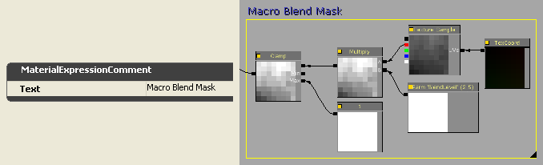
修改已分配的设置
当对已经分配给地形对象的TerrainLayerSetup执行实质性的修改时，比如在数组中插入或都删除材质项，改变数组中的项的顺序或者修改一个材质项或多个材质项的Noise(噪声)、Height(高度)或者Slope(坡度)属性，通过先不从地形对象中分配TerrainLayerSetup可以很大地提高性能。通常这仅在您插入或删除一项或如果您已经知道Noise(噪声)、Height(高度)或者Slope(坡度)的正确属性值时有用，因为丢失了渲染的地形视图在屏幕上的视觉反馈。然而，对于那些像删除多个材质项的重大改变，一般从地形对象中取消分配那个TerrainLayerSetup，进行改变，然后重新分配TerrainLayerSetup的过程是很快的。 如果您正在把资源直接存储到地形文件中，请确保在保存地图之前重新分配TerrainLayerSetups给地形对象，或者使用 automatic unused asset culling(自动剔除未使用的资源) 功能来从地图文件中删除未使用的资源。重新缓存地形材质
当对地形材质系统进行改变时，比如修改材质、TerrainMaterials、TerrainLayerSetups以及这些对象的布局顺序，在编辑器视口中当前渲染的地图或许不能进行更新来显示这些改变。点击左侧工具箱图标 Terrain Editing Mode(地形编辑模式) 图标来显示地形编辑对话框，然后点击 Recache Terrain Materials(重新缓冲地形材质) "RM"按钮来强制进行重新缓冲。一旦出现 Recache terrain shaders(重新缓冲地形着色器) 提示信息对话框，地形系统将会使用最新的地形设置。
GPU着色器支持
当需要对最终用户硬件的较老的安装基础进行支持时，关卡设计和地形复杂度的级别必须被缩减到相应的级别，以便可以维持一个具有合理视觉质量的可使用的渲染器系统。对于具有8个或较少的Texture Mapping Units (纹理贴图单元)的Shader Model 2.0的视频硬件来说，本文档中的很多技术可能都太复杂的并且性能要求较高的。 在ATI系列中，这应该是范围从9600 到 X800的适配器。X1000系列或更高的系列支持Shader Model 2.0或更高的，然而在X1000 和 HD2000系列中的较低的模型或许被限制在4 或 8个TMU's(纹理贴图单元)。 在NVidia系列中，这应该是从Riva到GeForce 4再到GeForce 5000的系列。6000系列及更高的系列都支持Shader Model 3.0或者更高的模型，然而，在6000、7000 和 8000 s中的较低的模型一般都限制在2、4、或8个TMU's(纹理贴图单元)。 DirectX D3DCAPS报告了一些涉及到Pixel Shaders(像素着色器)操作的支持标准。| 设备性能 | 描述 |
| PixelShader1xMaxValue | 可以存储在寄存器中的值的范围是[-PixelShader1xMaxValue, PixelShader1xMaxValue]。这仅在版本ps_1_1 到 ps_1_4中有效。 |
| MaxSimultaneousTextures | 对于固定的功能通道，贴图取色器的数量是MaxTextureBlendStages除以MaxSimultaneousTextures后所得的值。像素着色器的贴图样本的数量在下面的表格中进行了显示。 |
| PixelShaderVersion | 硬件所支持的像素着色器的版本。支持等于或小于这个像素着色器版本值的版本。 |
| Pixel Shader Version像素着色器版本 | 贴图着色器的数量 |
| ps_1_1 到 ps_1_3 | 4个贴图着色器 |
| ps_1_4 | 6个贴图着色器 |
| ps_2_0 to ps_3_0 | 16个贴图着色器 |
材质复杂度:超出的贴图着色器或者具有太多指令
虚幻引擎3中的地形系统使用GPU来执行网格物体渲染和贴图，因此，渲染能力受到GPU单元的功能列表和性能的限制，比如Fill Rate(填充速率)、Pixel Shader(像素着色器)的版本以及Pixel Shader Engines(像素着色器引擎)的数量、Texture Samplers(贴图取样器)的数量以及Texture Mapping Units（纹理贴图单元）的数量。 地形网格物体基于Terrain.MaxComponentSize属性被分为长方形的块。比如，MaxComponentSize的值为16，将会导致把每个由16x16地形patches(块)组成的大块作为一个分离的网格物体渲染调用函数(一个DrawMesh函数)来处理。每个分离的网格物体渲染调用函数也受到GPU的所有Texture Samplers(贴图取样器)可以管理的贴图数量的限制。所以那个Pixel Shader(像素着色器)版本的总Texture Samplers(贴图取样器)数量决定了每个地形组件中可以渲染的贴图的数量。如果Texture Samplers(贴图取样器)数量在一个地形组件中是超出的，那么地形将会渲染一个具有多色错误的贴图。 每个地形层设置，总是会为标准的光照贴图保留三个Texture Samplers(贴图取样器)(以便获得支持法线贴图的三个光源方向)，或者为一个“简单的”光照贴图保留一个Texture Samplers(贴图取样器)，这样仅在PCs上获得具有较低细节的反馈图像。控制台游戏机不支持简单的光照贴图，所以它们总是要求为光照贴图保留三个Texture Samplers(贴图取样器)。除此之外，TerrainLayerSetup(s)中的每个地形的TextureMaterial项都需要一个 weight map(权重贴图) 来决定特定贴图层在贴图块上的渲染位置。每个权重贴图是一个8-位的灰度化蒙板，所以它需要一个ARGB 32-位贴图的位面板，并且这些贴图中作为ARGB通道的打包的四个位面板。所以一个单独的合成权重贴图至多可以管理4个贴图层。 一个实例地形设置，比如6个不同的贴图层将需要以下数量的Texture Samplers(材质取样器)：- 3个光照贴图的Texture Samplers(材质取样器)
- 6个层的Texture Samplers(材质取样器)
- 2个权重贴图的Texture Samplers(材质取样器)，一个用于所有的4个位面板，一个仅用于2个位面板
- 删除不必要的细节贴图
- 把多个灰度化细节贴图结合到一个单独的ARGB贴图的多个位面板中。
- 删除不必要的法线贴图
- 移除一个或多个漫反射贴图层
- 通过在多个层上重新使用一个或多个漫反射贴图来降低离散漫反射贴图的总数量，比如仅使用一个沙漠贴图，但是使用材质表达式来提供任何其它的染色或亮度，而不是使用两个变种的离散贴图。
- 把用于大型贴图和alpha贴图的自定义的灰度化蒙板组合到一个单独贴图的位面板中。
- 把多个贴图组合到一个单独的贴图坐标系中，正如以下其中一个技术所概括的。
- 简化材质表达式来降低总的指令数量。
- 如果可以，替换一些静态网格物体细节，比如悬崖，以便可以降低总的贴图数量。
把细节贴图及蒙板打包到位面板中
要想在贴图取样器上进行保存，如果地形材质设置包含多个灰度化细节贴图或者自定义贴图大型蒙板或者超大蒙板，可以把这些贴图打包到一个贴图的位面板中，它是一个32-位的ARGB贴图可以提供4个打包贴图。 在Corel PhotoPaint中，可以通过从 Image(图像) 菜单上选择 Combine Channels(组合通道) 功能把三个8-位的图像打包为一个24-位的图像。选择这三个图像中的每一个并把它们分别分配给R, G 和 B通道。通过在 Mask 菜单上选择 Load from disk(从磁盘中加载) 项加载第四个8-位 图像，把它进行打包，从而产生一个32位的图像。当把它保存为32-位文件，比如.tga格式时，Mask(蒙板)会变为Alpha通道。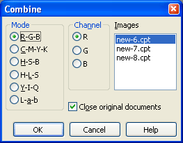
在Adobe PhotoShop中，可以通过在 Channels Palette(通道调色板) 中选择 Merge Channels(混合通道) 功能来把3个8-位的图像打包成一个24-位的图像。选择颜色通道的模式和数值，然后指定哪个图像分配给R, G 和B通道。 如果所有被打包的细节贴图的UV平铺值是一样的，那么一次最多可以打包4个8-位的灰度化细节贴图到一个单独的贴图位面板中。因为通常所有地形材质的细节贴图通常的缩放比例是一样的，比如8x 或16x，打包通常会按照4：1的比例来降低所需要的贴图取样器的数量。
如果所有被打包的细节贴图的UV平铺值是一样的，那么一次最多可以打包4个8-位的灰度化细节贴图到一个单独的贴图位面板中。因为通常所有地形材质的细节贴图通常的缩放比例是一样的，比如8x 或16x，打包通常会按照4：1的比例来降低所需要的贴图取样器的数量。

 以同样的方式，多个 Macro(大型) 贴图和 Super Masks(超大的蒙板) 也可以被打包到一个单独贴图的位面板中，从而降低独立贴图和所需要的贴图取样器的数量。这个例子中，把4个Super Masks(超大的蒙板)打包到位面板中。在本指南的Super Masks(超大的蒙板)部分可以看到地形的屏幕截图。
以同样的方式，多个 Macro(大型) 贴图和 Super Masks(超大的蒙板) 也可以被打包到一个单独贴图的位面板中，从而降低独立贴图和所需要的贴图取样器的数量。这个例子中，把4个Super Masks(超大的蒙板)打包到位面板中。在本指南的Super Masks(超大的蒙板)部分可以看到地形的屏幕截图。
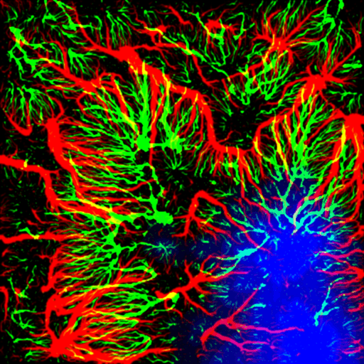
细节贴图：添加近距离细节
 在这个地形实例中，我们将添加一个细节贴图到以下的Rock(岩石的)漫反射贴图上，该漫反射贴图的TerrainMaterial.Material.MappingScale值为16，所以当从一个较近的距离看它时，它是非常模糊地。
在这个地形实例中，我们将添加一个细节贴图到以下的Rock(岩石的)漫反射贴图上，该漫反射贴图的TerrainMaterial.Material.MappingScale值为16，所以当从一个较近的距离看它时，它是非常模糊地。
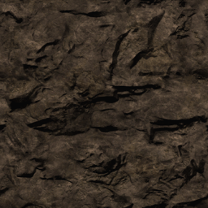
选中的表达式提供了这个材质中的细节贴图的设置：- Texture Sample = 细节贴图
- TexCoord =相对于主要的漫反射岩石贴图来说细节贴图的平铺量，可以根据需要进行调整。
- 标量参数"Detail Brightness(细节贴图的亮度)"=细节贴图的亮度混合值，者支持材质实例化。如果没有使用实例化，可以使用一个Constant(常量)拉力替换这个表达式。
- Multiply =用于调整材质混合中细节总体亮度的Detail Adjust(细节调整)乘数。
 正如这些前后对比屏幕截图所示，添加了细节贴图的材质大大地提高了地形贴图的视觉效果。
正如这些前后对比屏幕截图所示，添加了细节贴图的材质大大地提高了地形贴图的视觉效果。


法线贴图：添加凸凹细节
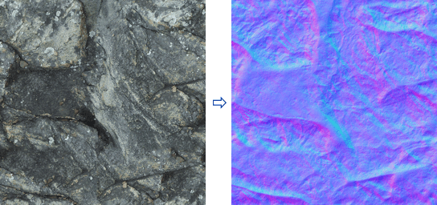
在这个地形实例中，我们将在以下沙漠漫反射贴图和材质上同时显示法线贴图和细节法线贴图。标准的法线贴图可以添加和漫反射贴图分辨率一样的三维立体化效果，而细节法线贴图可以为法线贴图添加具有更高分辨率的细节。 在具有标准法线贴图版本的材质中，法线贴图只是简单地连接到Normal节点作为一个Texture Sample(贴图样本)表达式。
在具有标准法线贴图版本的材质中，法线贴图只是简单地连接到Normal节点作为一个Texture Sample(贴图样本)表达式。
 在具有细节法线贴图版本的材质中，我们构建了一个普通的NormalMap(法线贴图)混合器，它由标准的法线贴图Texture Sample(贴图样本)组成，并且细节法线贴图设置添加在法线贴图Texture Sample(贴图样本)上，正如选中的表达式所示：
在具有细节法线贴图版本的材质中，我们构建了一个普通的NormalMap(法线贴图)混合器，它由标准的法线贴图Texture Sample(贴图样本)组成，并且细节法线贴图设置添加在法线贴图Texture Sample(贴图样本)上，正如选中的表达式所示： - Texture Sample =细节法线贴图
- TexCoord =相对于主要的标准的法线贴图来说细节法线贴图的平铺量，可以根据需要进行调整。
- VectorParameter(向量参数) "Detail NM Strength" =细节法线贴图的强度混合值，这支持材质实例化。如果没有使用实例化，这个表达式可以用一个Constant3Vector(3维常量向量)代替。
- Multiply =用于调整材质混合中的细节法线贴图的总体混合值的Detail Adjust(细节调整)乘数。
 正如在这些前后对比的屏幕截图中所看到，添加到材质上的法线贴图为地形贴图添加了大量的三维的视觉效果。细节法线贴图版本也通过添加更加精细的细节进一步增加了立体效果。
正如在这些前后对比的屏幕截图中所看到，添加到材质上的法线贴图为地形贴图添加了大量的三维的视觉效果。细节法线贴图版本也通过添加更加精细的细节进一步增加了立体效果。


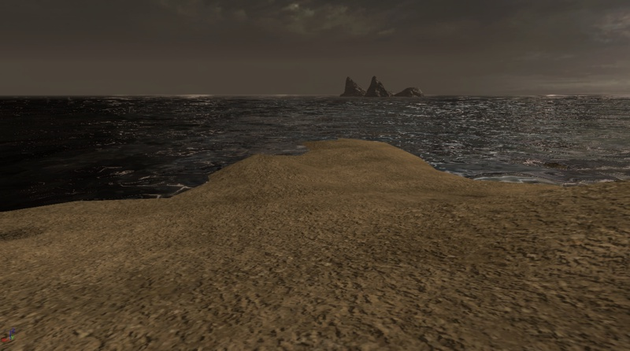
对于地形材质设置超出贴图取样器的情况，删除法线贴图和细节法线贴图应该是要采取的首选项操作之一。漫反射细节贴图通常会比法线贴图和细节法线贴图增加更好的视觉效果。 如果正在使用的引擎版本在地形系统中启用了Specular(高光)，那么请确保在所有的地形材质中关闭Specular(高光)功能。在这种特殊情况下，法线贴图将会有个趋势使得地形看上去更加平滑或有型。由于性能原因引擎中的地形上的高光在默认情况下是禁用的。多-ＵＶ混合：通过标量混合来降低平铺块效果
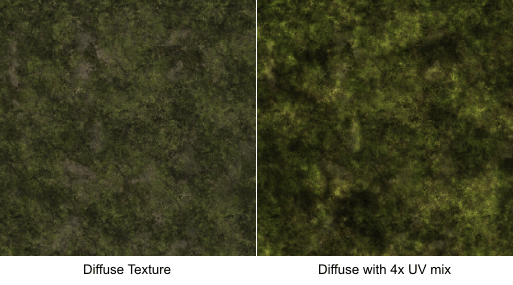
这个材质由标准的漫反射贴图和另一个同样的Texture Sample(贴图样本)的副本组成，并且一个TexCoord(贴图坐标)表达式连接到该副本的UV节点上，通过设该TexCoord的值来时的UV缩放比例增大2到4倍。对于TexCoord表达式来说，设置它的值为0.5将会导致比例增大两倍，设置值为0.25将会导致比例增大4倍。 如果想翻转贴图并尽可能地降低在较远的距离时贴图的明显的平铺块，你也可以为TexCoord平铺块提供负值。在这个例子中，值-0.25在翻转贴图的同时使得贴图缩放为原来的4倍。 第三个选项将缩放后的贴图旋转90度或270度，从而帮助降低可视化的平铺块效果，这可以通过以下说明的Rotator(旋转器)表达式来完。 在标准贴图和贴图的缩放副本中都添加上亮度乘数。这将通过它本身把总体的贴图亮度调整回漫反射贴图的亮度，比如是它本身乘以0.5的灰度，那么将会导致灰度变为较暗0.25 (0.5 * 0.5 = 0.25)。 "Brighten Amount(变亮量)"Constant(常量表达式)用于指出每个Texture Sample亮度要增加的量，一般该值为4。如果您希望在任何材质实例版本中暴露这些值，可以使用ScalarParameter(标量参数)表达式来替换Constant(常量)表达式。 在这个实例中，贴图的缩放版本也可以使用一个Desaturation(冲淡颜色)表达式把贴图冲淡25%，因为在这个特定实例中，当两个绿色的贴图相乘到一起时使得绿色的草贴图的颜色变得非常的绿。 如果您想使用一个缩放贴图的Rotator（旋转器）版本而不是简单地翻转贴图，你可以添加一个Rotator(旋转器)、一个TexCoord(贴图坐标)和一个Constant(常量)表达式来替换连接到Texture Sample的UV输入端节点的那个TexCoord表达式。
设置e Rotator.CenterX 和 .CenterY的值为0.5，即贴图的中心(50%)，并设置Rotator.Speed为1.0。
设置TexCoord.UTiling 和 .VTiling为期望的缩放尺寸，0.5代表2倍，0.25代表4倍等。
现在Constant(常量)表达式的值决定了贴图的固定旋转量。当Rotator.Speed值1.0时，要完全旋转360度的Constant(常量)值是2*pi或者近似值6.28318。所以进行90度的旋转时常量的值是1.570795、180度的旋转时常量的值是3.14159、270度的旋转时常量的值是4.712385。
注意：Rotator.Speed决定了贴图旋转的Constant常量的范围。速度为2.0，则导致0到360度旋转对应的Constant常量值是0到pi(3.14159)。速度为0.5，则导致0到360度旋转对应的Constant常量值是0到4*pi (12.56636)。
如果您想使用一个缩放贴图的Rotator（旋转器）版本而不是简单地翻转贴图，你可以添加一个Rotator(旋转器)、一个TexCoord(贴图坐标)和一个Constant(常量)表达式来替换连接到Texture Sample的UV输入端节点的那个TexCoord表达式。
设置e Rotator.CenterX 和 .CenterY的值为0.5，即贴图的中心(50%)，并设置Rotator.Speed为1.0。
设置TexCoord.UTiling 和 .VTiling为期望的缩放尺寸，0.5代表2倍，0.25代表4倍等。
现在Constant(常量)表达式的值决定了贴图的固定旋转量。当Rotator.Speed值1.0时，要完全旋转360度的Constant(常量)值是2*pi或者近似值6.28318。所以进行90度的旋转时常量的值是1.570795、180度的旋转时常量的值是3.14159、270度的旋转时常量的值是4.712385。
注意：Rotator.Speed决定了贴图旋转的Constant常量的范围。速度为2.0，则导致0到360度旋转对应的Constant常量值是0到pi(3.14159)。速度为0.5，则导致0到360度旋转对应的Constant常量值是0到4*pi (12.56636)。
 正如您在实例屏幕截图中所看到的，第一张图像中的草地贴图的平铺块是非常明显的。把贴图按照4倍的缩放比例混合到它自己本身时降低了平铺块效果，并且使得材质在远镜头距离和近镜头距离上的视觉效果都更加令人满意。
正如您在实例屏幕截图中所看到的，第一张图像中的草地贴图的平铺块是非常明显的。把贴图按照4倍的缩放比例混合到它自己本身时降低了平铺块效果，并且使得材质在远镜头距离和近镜头距离上的视觉效果都更加令人满意。
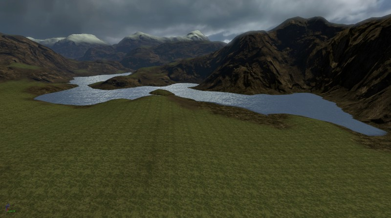

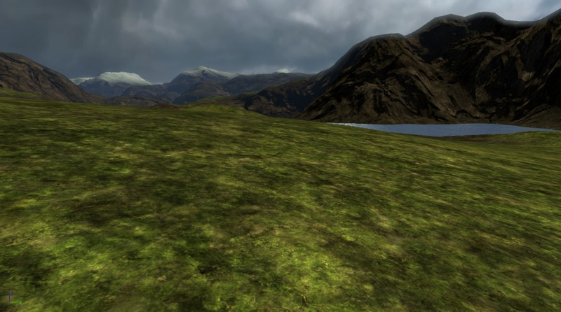
随机平铺蒙板：随机化贴图映射来降低贴图平铺效果
 第一个源TextureSample(贴图样本)进行正常的应用。
第二个源TextureSample(贴图样本)，设置它的Rotator.CenterX 和 .CenterY 属性的值为0.5，即贴图的中心(50%)，并设置Rotator.Speed为1.0。设置TexCoord.UTiling 和 .VTiling都为1.0。
现在Constant(常量)表达式的值决定了贴图的固定旋转量。当Rotator.Speed值1.0时，要完全旋转360度的Constant(常量)值是2*pi或者近似值6.28318。所以进行90度的旋转时常量的值是1.570795、180度的旋转时常量的值是3.14159、270度的旋转时常量的值是4.712385。
连接到蒙板TextureSample(贴图样本)上的UVs输入端的TexCoord表达式应该设置为1/texture_size，在这个例子中是1/64 或0.015625。如果需要，你也可以使用一个16x16 (1/16 = 0.0625) 或 32x32 (1/32 = 0.03125)的蒙板贴图。我们不使用128x128贴图的原因是1/128 = 0.0078125，而虚幻引擎表达式仅支持6个小数位，所以如果TexCoord值为1/128，它将会被上舍入到0.007813，这可能会导致可视化的位移异常。
材质中的LinearInterpolate (Lerp)(线性插值)表达式将会根据Alpha输入端的值来切换A:B输入端。通过在Alpha输入端使用一个随机的像素蒙板，我们使得Lerp(线性插值)表达式根据像素是黑色还是白色来选择使用正常的贴图版本还是旋转后的贴图版本。
您也可以使用这个功能来创建一个材质覆盖层，它可以根据在蒙版贴图中所描画的白色相对于黑色像素的设计来创建一种正常风格的及旋转风格的贴图。
第一个源TextureSample(贴图样本)进行正常的应用。
第二个源TextureSample(贴图样本)，设置它的Rotator.CenterX 和 .CenterY 属性的值为0.5，即贴图的中心(50%)，并设置Rotator.Speed为1.0。设置TexCoord.UTiling 和 .VTiling都为1.0。
现在Constant(常量)表达式的值决定了贴图的固定旋转量。当Rotator.Speed值1.0时，要完全旋转360度的Constant(常量)值是2*pi或者近似值6.28318。所以进行90度的旋转时常量的值是1.570795、180度的旋转时常量的值是3.14159、270度的旋转时常量的值是4.712385。
连接到蒙板TextureSample(贴图样本)上的UVs输入端的TexCoord表达式应该设置为1/texture_size，在这个例子中是1/64 或0.015625。如果需要，你也可以使用一个16x16 (1/16 = 0.0625) 或 32x32 (1/32 = 0.03125)的蒙板贴图。我们不使用128x128贴图的原因是1/128 = 0.0078125，而虚幻引擎表达式仅支持6个小数位，所以如果TexCoord值为1/128，它将会被上舍入到0.007813，这可能会导致可视化的位移异常。
材质中的LinearInterpolate (Lerp)(线性插值)表达式将会根据Alpha输入端的值来切换A:B输入端。通过在Alpha输入端使用一个随机的像素蒙板，我们使得Lerp(线性插值)表达式根据像素是黑色还是白色来选择使用正常的贴图版本还是旋转后的贴图版本。
您也可以使用这个功能来创建一个材质覆盖层，它可以根据在蒙版贴图中所描画的白色相对于黑色像素的设计来创建一种正常风格的及旋转风格的贴图。
 正如在下面的前后对比屏幕截图中所示的，泥土贴图包含一个可见的平铺块线，通过随机地算转后使得那条线变得不再那么明显。
正如在下面的前后对比屏幕截图中所示的，泥土贴图包含一个可见的平铺块线，通过随机地算转后使得那条线变得不再那么明显。


大型贴图:混合贴图来获得多样性
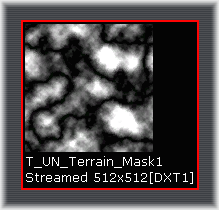
大型材质相对来讲是简单的，它由两个源TextureSamples和一个Macro设置表达式组成，正如当前在下面的材质截图中选中的情况。Macro设置被连接到LinearInterpolate(线性插值)表达式的Alpha输入端，以便大型贴图中的灰度化值0到255决定在两个源贴图间的混合量。 Macro设置本身，使用了以下表达式：- TextureSample =包含大型贴图。
- TexCoord =相对于地形来决定大型贴图的尺寸。地形上的混合平铺块的范围可以从很小的区域到很大的区域。这通常设置值为0.25 (4倍) 或 0.125 (8倍)或者更小的值。
- Multiply(乘法) 和它的Constant(常量) = "Macro Mix Level"允许您对灰度化大型贴图的混合层次进行微调，可以通过把它的灰度值调高或者调低来实现。如果你想使用实例化的材质，这个Constant(常量)表达式也可以被替换为ScalarParameter(标量参数)表达式。
- Clamp(区间限定) 和它的Constant(常量)=限定大型贴图的输出级别在值0.0和1.0之间。使用大于1.0的值将可能会冲掉地形上的材质。
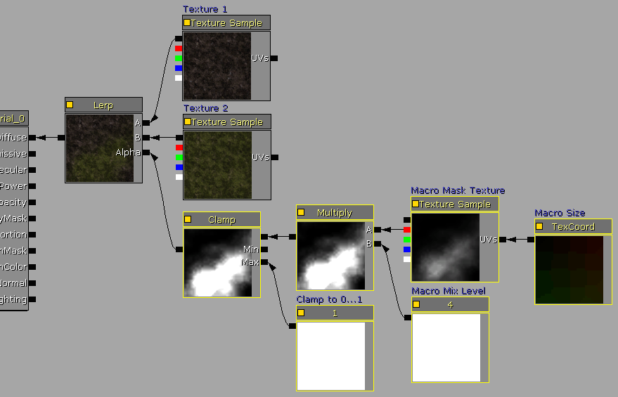
正如截图中所显示的前后对比图，当泥土贴图和草地贴图混合后，草地贴图的平铺块看上去不是那么明显并且具有更多的多样性。第三个屏幕截图显示了在俯视视图下的地形，在这里您会更加容易地看到两个贴图间的混合。

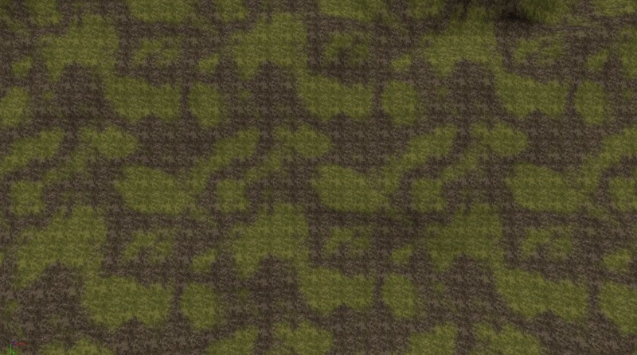
超大蒙板：在顶点级别之外增加地形的细节
 如果我们检查一个完全描画的地形的权重贴图文件，我们将会看到一些和这个例子类似的东西，该例子是一个256x256的地形并且它的悬崖上有256x256的权重贴图(这些块在大约30度到90度之间有一个斜坡)。把这个地形的分辨率和页面上在它下面的实例Super Mask(超大蒙板)贴图的分辨率相比较。注意为了匹配页面，这个单一的Super Mask (超大蒙板) 的高分辨率已经从1024x1024降低为880x880。
如果我们检查一个完全描画的地形的权重贴图文件，我们将会看到一些和这个例子类似的东西，该例子是一个256x256的地形并且它的悬崖上有256x256的权重贴图(这些块在大约30度到90度之间有一个斜坡)。把这个地形的分辨率和页面上在它下面的实例Super Mask(超大蒙板)贴图的分辨率相比较。注意为了匹配页面，这个单一的Super Mask (超大蒙板) 的高分辨率已经从1024x1024降低为880x880。

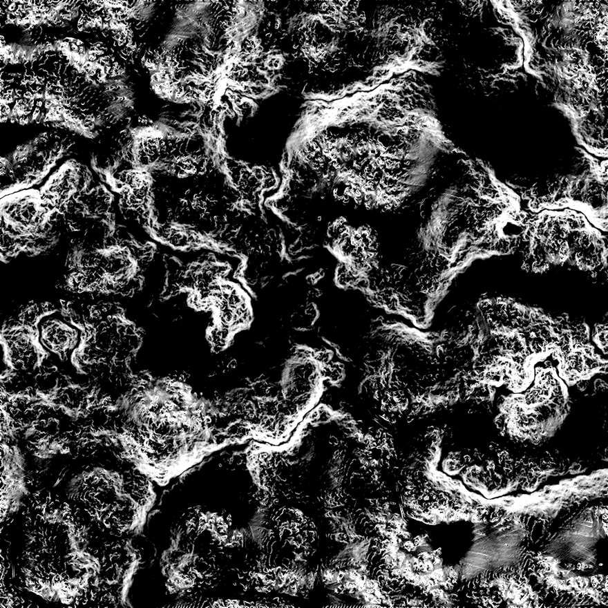
现在的视频适配器所支持的贴图分辨率达到了8192x8192，它是当前地形系统中的可能使用的细节为256x256权重贴图的1024 (32x32)倍。举个例子，分辨率为8192的Super Mask(超大蒙板)和标准的256x256地形相比将会提高层的贴图细节，使它从10.24米降低为0.32米(从33.6英尺降低为1.05英尺)。 通常使用这个高的分辨率的资源使用是非常昂贵的，并且使用这些高分辨率的文件进行工作也会变得更加困难，所以使用分辨率为1024x1024 或 2048x2048的Super Masks(超大蒙板)进行工作是比较容易的。同时这也仍然可以提供出比大多数地形设置更高的细节级别，一个1024x1024的Super Mask(超大蒙板)的细节比128x128 的地型大64倍。 Super Masks(超大蒙板)是简单的高分辨率8-位贴图，它定义了在哪里渲染特定的贴图层。这个alpha通道和不透明蒙板非常类似。Super Masks(超大蒙板)可以由精通Photshop的美术工作人员手动地绘制或者通过使用各种软件应用程序的各种方法来自动创建。 在这个实例地形中，为地形上的三个不同的地理部分通过算法创建了三个高分辨率1024x1024的蒙板，这些地理形态包括坚硬的山脊、腐蚀的缺口以及水面区域周围的海滩。当把它们打包到一个单独的RGB 24-位贴图的位面板中时，这三个蒙板的外观如以下图片所示。然后把这个贴图导入到UnrealEd中，设置为标准的CompressionNoAlpha DXT1格式。注意下图是把实际贴图分辨率降低为512x512的版本，以便它可以很容易地和这个网页相匹配。 一旦创建了Super Mask(超大蒙板)贴图并把它导入到了UnrealEd中，使用这个贴图的材质设置是相对简单的，以为内每个Super Mask(超大蒙板)位面板每个表达式 block(块) 从本质上是一样的。 正如下面的材质图像所显示的:- 一个LinearInterpolate(线性插值)表达式基于Super Mask(超大蒙板)的R位面板混合了Base和Ridge贴图。
- 一个LinearInterpolate(线性插值)表达式基于Super Mask(超大蒙板)的G位面板混合入了Erosion贴图。
- 一个LinearInterpolate(线性插值)表达式基于Super Mask(超大蒙板)的B位面板混合入了Beach贴图。
- 连接到TextureSamples的UVs输入节点的TexCoord(贴图坐标)表达式指出了平铺量，它和TerrainMaterial对象的UTiling、VTiling属性类似。
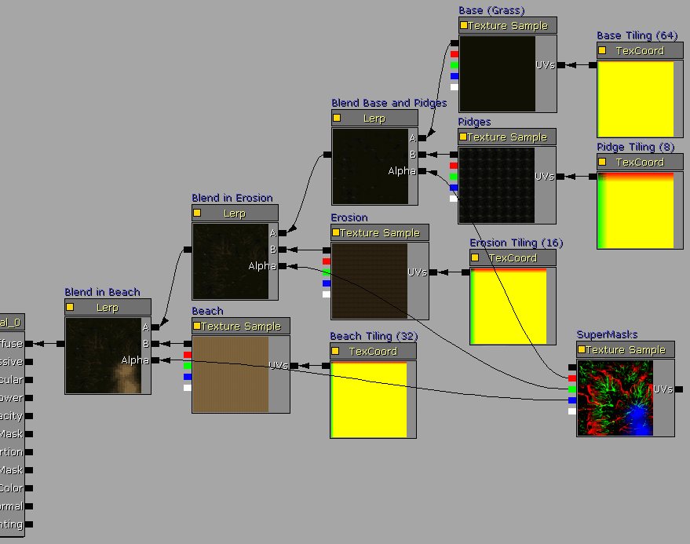
通用浏览器中的最终材质如下所示，从本质上来说，地形层贴图的布局覆盖为1：1。 创建一个新的TerrainMaterial(地形材质)，并把Super Mask Material(超大蒙板材质)分配给Material(材质)属性。设置TerrainMaterial MappingScale属性的分辨率和地形的分辨率一样，也就是，地形块的数量。在这个例子中，我们使用了一个256x256块的地形。这将会把Super Mask Material(超大蒙板材质)按照1：1的比例渲染到地形上。 这个屏幕截图是使用1024x1024的Super Mask s(超大蒙板)系统作为材质层的256x256地形的最终屏幕截图，它提供的描画细节是正常描画的6倍。
这个屏幕截图是使用1024x1024的Super Mask s(超大蒙板)系统作为材质层的256x256地形的最终屏幕截图，它提供的描画细节是正常描画的6倍。

使用1:1的法线贴图来增加地形的“分辨率”
通过使用和法线贴图增加一般网格物体的细节一样的方法，也可以通过添加一个1024x1024或者具有更加精细细节的NormalMap(法线贴图)来提高地形分辨率细节。这个法线贴图是在随着256x256的地形高度图不断增加的4x4分辨率下根据算法创建的。导入这个法线贴图，并像应用标准的法线贴图一样把它一样把它应用到材质的Normal节点上。 以下的前后对比图显示了应用法线贴图后的不同。注意为了获得良好的效果，已经增加了NormalMap(法线贴图)的深度。
以下的前后对比图显示了应用法线贴图后的不同。注意为了获得良好的效果，已经增加了NormalMap(法线贴图)的深度。

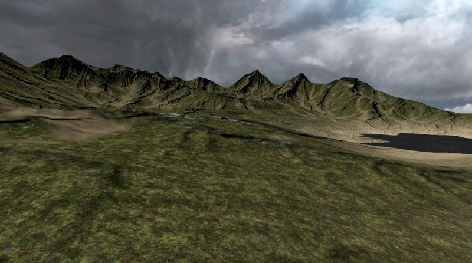
贴图打包:实现大贴图平铺设置
 在这个例子的地形设置中，在4个独立的Materials(材质)将使用象限贴图，一个象限对应每个平铺块。也可以把贴图平铺设置其它的地形层方法结合使用，比如Super Masks，从而把整个地形层设置结合到一个单独的材质系统中。
这些是那4个材质：
在这个例子的地形设置中，在4个独立的Materials(材质)将使用象限贴图，一个象限对应每个平铺块。也可以把贴图平铺设置其它的地形层方法结合使用，比如Super Masks，从而把整个地形层设置结合到一个单独的材质系统中。
这些是那4个材质：
 如果我们检查在每个材质中所使用的表达式，我们会发现从本质上来说几乎所有的设置都是一样的，仅有较少的表达式的值是不同的，这些值用于设置子贴图的 U/VTiling 量并指定提取那个子贴图平铺块。
注意，地形的层材质平铺是通过这些材质中的TextureCoordinate进行设置的，而不是通过TerrainMaterial.MappingScale属性进行设置的。
如果我们检查在每个材质中所使用的表达式，我们会发现从本质上来说几乎所有的设置都是一样的，仅有较少的表达式的值是不同的，这些值用于设置子贴图的 U/VTiling 量并指定提取那个子贴图平铺块。
注意，地形的层材质平铺是通过这些材质中的TextureCoordinate进行设置的，而不是通过TerrainMaterial.MappingScale属性进行设置的。
- TexCoord:指出了贴图的UTiling 和 VTiling的量。常用的值是4、8或16。
- Frac:复制TexCoord中指定的值的小数部分，以便坐标仅通过子贴图进行平铺。
- Constant2Vector:说明了提取出的贴图块的EndX,Y的坐标，对于一个2x2的贴图块来说这个值应该是1/2 或 0.5。
- Constant2Vector:说明了提取出的贴图块的StartX,Y的坐标，对于一个2x2的贴图块来说，根据提取出的平铺块的不同，这个值将是0.0 或 0.5。
- TextureSample:指出了贴图平铺块


 接下来的步骤创建一个必须的 TerrainMaterial (地形材质)对象，为每个材质创建一个，并创建TerrainLayerSetup (地形层设置)。
接下来的步骤创建一个必须的 TerrainMaterial (地形材质)对象，为每个材质创建一个，并创建TerrainLayerSetup (地形层设置)。TerrainMaterial.MappingScale必须设置为地形的大小，以块为单位。也就是256x256的地形设置为256。 在这个实例中，TerrainLayerSetup(地形设置)在它们的TerrainMaterials中使用了4个程序上的元素，并且设置了高度和坡度属性，以便结果有各种不同的悬崖和平原层的变种。
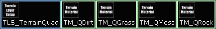
最终的地形如下所示：
1:1覆盖图:在地形上平铺多个高分辨率贴图
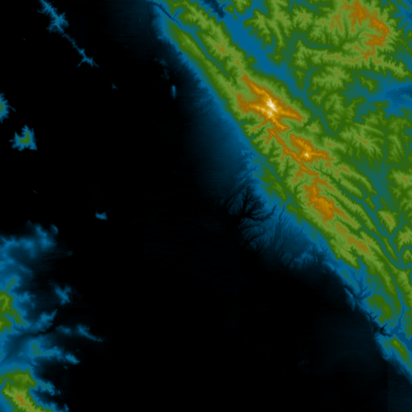
从在线服务中获得了一个高分辨率为17254x15490的航空彩色图片。然后把这个图片加载到标准的绘图应用程序中，剪切为和DEM高度图区域一样的位置。然后把剪切的贴图重新采样为一个具有适当大小，尺寸为2的倍数，以便在UnrealEd中进行应用，这个例子中重新采样后的分辨率为2048x2048。当导入高分辨率贴图时，请确保选择适当的LODGroup，以便支持最大的贴图mip尺寸。 原始图片版权 Geosage.com
为那个贴图创建一个基本的材质。把TextureSample连接到Diffuse(漫反射)节点上。
创建了基本的TerrainMaterial(地形材质)后，把那个材质分配给它。TerrainMaterial.MappingScale必须设置为地形的尺寸，以块为单位，比如，在我们的例子中，一个512x512的地形的TerrainMaterial.MappingScale设置为512。也就是256x256的地形设置为256。
创建一个基本的TerrainLayerSetup，把TerrainMaterial分配给它。然后把TerrainLayerSetup分配给Terrain(地形)actor。
原始图片版权 Geosage.com
为那个贴图创建一个基本的材质。把TextureSample连接到Diffuse(漫反射)节点上。
创建了基本的TerrainMaterial(地形材质)后，把那个材质分配给它。TerrainMaterial.MappingScale必须设置为地形的尺寸，以块为单位，比如，在我们的例子中，一个512x512的地形的TerrainMaterial.MappingScale设置为512。也就是256x256的地形设置为256。
创建一个基本的TerrainLayerSetup，把TerrainMaterial分配给它。然后把TerrainLayerSetup分配给Terrain(地形)actor。
 这个实例中，该地形放置在San Francisco的海港处，向内朝向山脉。
这个实例中，该地形放置在San Francisco的海港处，向内朝向山脉。
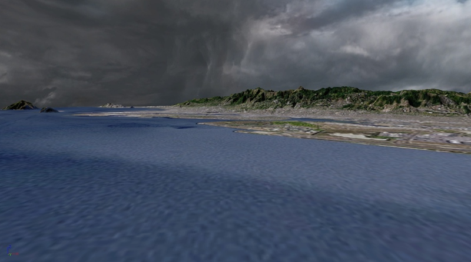
具有多个平铺块的展开的覆盖图
覆盖图技术的展开版本包括使用多个展开的平铺的高分辨率贴图，比如一个大型的16384x16384地形平铺系统展开为一个2x2布局的8192x8192的贴图。使用这种方法，便可以使用那些类似于GIS(物理信息系统)以及其它的现实世界中的可见地形的非常复杂的高分辨率地形贴图。 地形高度图使用我们想渲染渲染的区域的高分辨率的DEM数据获得的。在这个实例中，512x512快的高度图被重新调整为513x513。这个高度图然后被转换为G16格式并通过地形编辑对话框被导入到地形中。 需要记住的一个技巧是，您可以使用高分辨率的DEM高度图作为1:1的法线贴图的源，从而提高地形的视觉效果的细节。比如，如果源DEM数据的分辨率是2048x2048，游戏中的最终分辨率是256x256，那么可以把源DEM数据转换为一个分辨率为2048x2048的法线贴图，并按照1：1的覆盖图应用在地形上，从而提高地形分辨率细节的视觉效果。 然后使用和高度图区域具有同样大小的高分辨率卫星图像作为覆盖图贴图。在这个实例中，使用一个15米的像集来提供一个13,000x13,000的贴图，把这个贴图重新取样为8192x8192，然后把它分隔为4096x4096的象限贴图。每个象限贴图应该从两个内部边复制一个或多个像素条带到两个外部边缘，以便删除地形上的任何缝隙线。8192x8192的忒图可以作为一个单独的Texture Sample在材质中进行应用，但是这限制了地形只能用于较新版本的视频适配器。通过使用4096的贴图，我们便提高了视频硬件的支持能力。
和从高分辨率的DEM创建法线贴图的方式类似，如果卫星图片的高分辨率版本是清晰的，并且具有和地形性对垂直的光源，那么也可以直接从这个卫星图片上来产生法线贴图。
然后使用和高度图区域具有同样大小的高分辨率卫星图像作为覆盖图贴图。在这个实例中，使用一个15米的像集来提供一个13,000x13,000的贴图，把这个贴图重新取样为8192x8192，然后把它分隔为4096x4096的象限贴图。每个象限贴图应该从两个内部边复制一个或多个像素条带到两个外部边缘，以便删除地形上的任何缝隙线。8192x8192的忒图可以作为一个单独的Texture Sample在材质中进行应用，但是这限制了地形只能用于较新版本的视频适配器。通过使用4096的贴图，我们便提高了视频硬件的支持能力。
和从高分辨率的DEM创建法线贴图的方式类似，如果卫星图片的高分辨率版本是清晰的，并且具有和地形性对垂直的光源，那么也可以直接从这个卫星图片上来产生法线贴图。
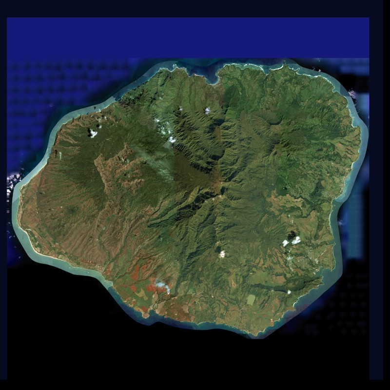
然后把4个分辨率为4096x4096的贴图导入到UnrealEd中。然后为它们设置 CompressionNoAlpha 和 LODGroup来支持大小为4096的贴图 。ATTACHURL%/UE3OverlayTileTex.gif 然后在绘图软件中创建一个 象限蒙板 贴图，它是一个具有3个黑色像素和一个白色像素的2x2贴图。这用于蒙板来决定源象限贴图在地形的哪个位置进行渲染。白色的像素决定了贴图在那个位置进行渲染。如果要实现的是一个较大的平铺系统，比如3x3 或 4x4个平铺块，那么可以根据需要来创建这个蒙板。 贴图将会作为不压缩的格式导入，因为它仅是一个2x2的贴图 ，所以不需要进行压缩。 以下是贴图被缩放的清晰可见的较大尺寸时的屏幕截图。 实际的材质是一个组简单的TextureSamples(贴图样本)，并且把TexCoord连接到它的UVs节点上来提供所需要的2x2平铺块。
然后把象限蒙板用作为Alpha输入端来设置通过LinearInterpolate表达式把每个TextureSample渲染到那个象限上。连接到象限蒙板的UVs节点的TexCoords(贴图坐标)用于适当地翻转贴图，以便白色的像素处于期望的象限位置。
实际的材质是一个组简单的TextureSamples(贴图样本)，并且把TexCoord连接到它的UVs节点上来提供所需要的2x2平铺块。
然后把象限蒙板用作为Alpha输入端来设置通过LinearInterpolate表达式把每个TextureSample渲染到那个象限上。连接到象限蒙板的UVs节点的TexCoords(贴图坐标)用于适当地翻转贴图，以便白色的像素处于期望的象限位置。
 然后创建一个TerrainMaterial。它的Material.MappingScale的属性设置为地形的大小，以块为单位，在这个例子中是512。然后把这个材质分配到Material.Material属性中。
创建TerrainLayerSetup。向它的数组中添加一个元素，并且把那个TerrainMaterial分配给Materials[0].Material属性。
然后把TerrainLayerSetup分配到Terrain(地形)actor的Layers(层)数组中。
然后创建一个TerrainMaterial。它的Material.MappingScale的属性设置为地形的大小，以块为单位，在这个例子中是512。然后把这个材质分配到Material.Material属性中。
创建TerrainLayerSetup。向它的数组中添加一个元素，并且把那个TerrainMaterial分配给Materials[0].Material属性。
然后把TerrainLayerSetup分配到Terrain(地形)actor的Layers(层)数组中。
 这个实例是夏威夷考艾岛的地形。高度图是513x513，平铺覆盖材质是4个4096x4096的贴图，分辨率4096x4096法线贴图是从8192x8192的源覆盖贴图中衍生出来的。
这个实例是夏威夷考艾岛的地形。高度图是513x513，平铺覆盖材质是4个4096x4096的贴图，分辨率4096x4096法线贴图是从8192x8192的源覆盖贴图中衍生出来的。